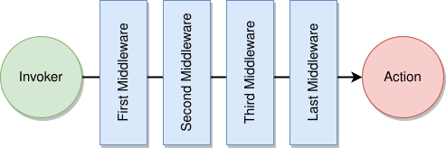

# About Middlewares
Middleware functions are functions that have access to the request Context ("ctx"),
the configuration of the Action ("config"),
and the next Action (or Middleware) function in the application’s request-response cycle ("action"):
The "config" contains all annotations of the Action,
converted
to a Tree (opens new window) (~= JSON) object.
Middleware functions can perform the following tasks:
- Execute any code.
- Make changes to the request and the response objects.
- End the request-response cycle.
- Call the next local or remote
ActionorMiddlewarein the stack.
For Node.js developers: this is how you write "action hooks"
Node.js has action hooks (before/after/error) and broker middleware. Java has one
mechanism: a Middleware wraps an Action. The code you run before action.handler(ctx) is the
before hook, the code after it is the after hook, and a try/catch around it is the error
hook. A Middleware wraps Actions only — there is no built-in emit/broadcast/localEvent
middleware. To run logic around an event, put it in the event Listener itself; to run logic on
broker start/stop, use the service's started/stopped
handlers.
public class MyMiddleware extends Middleware {
public Action install(Action action, Tree config) {
// Create new "Action" or return "null", this is decided by
// the "config" which contains the parameters of the original Action.
// If you return "null", you won't install Middleware for the Action.
return new Action() {
public Object handler(Context ctx) throws Exception {
// --- FUNCTIONS BEFORE CALLING THE ACTION ---
// Do nothig, just invoke next Middleware or Action
Object rsp = action.handler(ctx);
// --- FUNCTIONS AFTER CALLING THE ACTION ---
// Return the response of the Action
return rsp;
}
};
}
}
Use the "use" function of ServiceBroker to install the Middleware:
broker.use(new MyMiddleware());
Middlewares is executed in reverse order as they are added to ServiceBroker:
broker.use(new LastMiddleware()); // Installed and/or executed LAST
broker.use(new ThirdMiddleware());
broker.use(new SecondMiddleware());
broker.use(new FirstMiddleware()); // Installed and/or executed FIRST

# Example of Middleware-based pre-processing
In Java-based Moleculer, it is easiest to configure Actions with annotations.
The following code snippet creates an annotation to assign Roles to Actions:
@Retention(RetentionPolicy.RUNTIME)
@Target({ ElementType.FIELD, ElementType.TYPE })
public @interface RequiredRoles {
String[] value() default { "admin" };
}
Annotations can be added to the Actions as follows:
public class CheckedService extends Service {
@RequiredRoles("admin")
public Action adminAction = ctx -> {
// ...
};
@RequiredRoles({"user", "admin"})
public Action userAction = ctx -> {
// ...
};
}
Middleware can access the list of "RequiredRoles" via the "config" object:
public class AccessControllerMiddleware extends Middleware {
@Override
public Action install(Action action, Tree config) {
// Does the Action have "RequiredRoles" annotation?
Tree requiredRoles = config.get("requiredRoles");
if (requiredRoles == null) {
// If there is no "RequiredRoles", we won't install anything
return null;
}
// Install new "layer" on top of the Action
return new Action() {
@Override
public Object handler(Context ctx) throws Exception {
// Role check with some control function
if (!userInRole(ctx, requiredRoles)) {
throw new SecurityException("Access denied!");
}
// Access is allowed
return action.handler(ctx);
}
};
}
}
Finally install the Middleware using the "use" function of ServiceBroker:
broker.use(new AccessControllerMiddleware());
# Asynchronous (non-blocking) middleware
action.handler(ctx) may answer asynchronously (it can return a Promise, not just a Tree). To
post-process such a response, wrap whatever the action returns in a Promise and chain .then(...) —
never waitFor(...) inside a middleware, which would block the calling thread:
public class TimingMiddleware extends Middleware {
@Override
public Action install(Action action, Tree config) {
return new Action() {
@Override
public Object handler(Context ctx) throws Exception {
long start = System.nanoTime();
// new Promise(...) accepts a Tree, a value OR a Promise, so it
// works the same whether the action answered sync or async:
return new Promise(action.handler(ctx)).then(rsp -> {
// runs AFTER the (possibly remote/async) action resolves
long micros = (System.nanoTime() - start) / 1000;
logger.info("{} took {} us", ctx.name, micros);
return rsp; // pass the response through unchanged
}).catchError(err -> {
// the async equivalent of an "error" hook
logger.error("{} failed", ctx.name, err);
throw err;
});
}
};
}
}
Because new Promise(action.handler(ctx)) normalises the return value, one middleware handles
synchronous and asynchronous actions identically.
# Caching the response of Actions
Among many other uses, Middleware is used to cache the response of Action.
Cacher (opens new window) Middleware is an abstract class that uses request input data as a key to store responses in a cache.
The actual implementation of the Cacher can be local or distributed.
Cacher Middleware is automatically added to ServiceBroker at startup.
Read more about caching.
There is another kind of middleware in the Moleculer Framework; the HttpMiddleware.
An HTTP Middleware is similar to Middleware, but HTTP Middleware processes HTTP requests instead of internal Action calls.
Read more about HTTP Middlewares
If you are interested in compression or encryption, you should not do it with Middleware, but with Serializers.